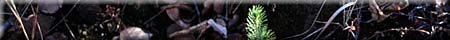

Objectives
Lesson Info
Activities
Background Info
Additional Info
Other Considerations
Resources
Related Links
Activity #1

- to create an environmentally and economically effective silviculture plan for regenerating a harvested area or area in need of trees
- to consider sustainable planted regeneration and species diversity.
| Grade Level | 9 and 11 | |
| Subject | Social Studies & Biology | |
| Curriculum Correlation | Reforestation, Agricultural Botany if Saskatchewan | |
| CEL's | Critical and Creative Thinking, Numeracy. | |
| Duration | 2 hours (for plan) | |
| Group Size | Individually or in groups | |
| Setting | classroom; outdoors | |
| Vocabulary | reforestation, silviculture, afforestation, site preparation, habitat, shelterbelt. |
Silviculture is the art and science of growing forests. The goals of silviculture are to regenerate valuable tree species, maximize growth rates and quality of trees and assist in the establishment of new trees and forests. While natural regeneration is an important part of silviculture, planting nursery-grown seedling and direct seeding techniques are often required. To ensure the health and rapid growth of the trees, special care is taken to create a workable plan including preparing the site for planting and for tending the forest afterwards. Weeding, spacing, pruning, fertilizing and protecting the forest from fire, insects and disease are all essential to ensuring a healthy stand of trees.
Soil conditions are very important when selecting tree and shrub species. For example, some are salt tolerant and can be planted in alkali soils or along roadways where salt washes off in winter and spring. Other species would not survive under these conditions. When selecting species for planting soil type in an area and soil requirements of the species being selected, have to be matched.
Trees and shrubs that have value to wildlife should be selected whenever possible. Habitat should provide food, water and cover for wildlife. A corridor of cover will help protect wild species from predators and harsh climatic conditions as they move from one clump of trees to another or to water. A dugout or pond may be created of water is not readily available. Food may be in the form of brows for deer, berries and seeds for birds and habitat for small herbivores such as insects.
The planting site has to be prepared for the seedlings. For example, it is best to cultivate the soil into which they will be planted to reduce competition with weeds. Weed control should continue for three years after planting to ensure success. If mechanical weed control is to be used, the distance between the rows should be sufficient to accommodate the width of the tractor, cultivator or rototiller. Straight rows are not as beneficial to wildlife as curved rows or random plantings. After the third year, an organic mulch such as wood chips is recommended to keep down weeds. An alternative to mechanical weed control is the use of fibre mulch which also discourages weeds. Once the trees and shrubs are well established, a natural growth of forest understory vegetation will not limit their success and it will improve the aesthetics of the plantings and provide more cover and food for wildlife.
Field shelterbelts are often single row plantings with a combination of two species such as green ash and caragana. Sometimes, two plantings are used, one of taller trees and one of shrubs about 5 m apart. Around buildings, four of five rows of trees may be planted to reduce wind and snow buildup. The shelterbelt should be about 30 m away from buildings or a road to be most effective.
Choose native plant species if they are available and their cost is reasonable. These plants have evolved in the ecoregion and are adapted to the soil and climate of the area. Wildlife species are accustomed to eating the fruit , leaves and twigs of native vegetation and may not thrive as well on introduced species. Introduced trees and shrubs may have a competitive advantage when it comes to out-competing weeds. Therefore, to establish afforestation in an area, non-native trees may be used and later replaced by native species. Native trees and wildflowers may be planted in between the clumps of trees. This provides edge and areas for sunning as well as attracting small wildlife species, like butterflies.
The size and form of trees and shrubs at maturity must be taken into account when designing the configuration of the planting. The planting should be made as natural as possible. Trees and shrubs are more likely to occur in riparian areas, along water ways in southern Saskatchewan, and in low lying areas. Extensive forests are not usually seen south and east of the forest fringe area, but rather clumps of trees and shrubs, or bluffs. To maximize the benefits of plantings for wildlife and wind reduction, topography and wind direction have to be considered. The following diagrams illustrate the cross sectional shape of two types of plantings at maturity. Note that if more rows of trees are to be added, that is done with the taller trees, between the highest rows in the diagram. If there are to be fewer rows, the tallest trees are removed first.
Additional Information: How to Plant a Tree
- Plan: location, site preparation, planting, spacing, protection and tending techniques Chart and investigate techniques, ie Tending garden....fertilizing, mulching the soil to prevent erosion and weed growth, pruning and thinning if there is over crowding of some species, fencing the garden if necessary, controlling insect pests, loosening compacted soil, protecting shrubs in winter.
- Order: trees and shrubs in advance. Trees are available in the spring. Seedlings can be obtained from PFRA, TREEmendous Saskatchewan or a provincial nursery. Grants may be available to help with expenditures.
- Mulch: As a option, purchase black plastic to use as mulch and have it ready for planting day. Cut the plastic into squares approximately 2 feet by 2 feet. Put a slit in the centre by folding the plastic square into quarters and clipping the folded corner.
- Planting: should be done in the spring after the thaws and before the buds open. It takes about 15 minutes per tree to plant the trees. Dig a hole large enough in diameter to accommodate the roots spread out in a natural position, deep enough so that some good, loose earth may be placed in the bottom of the hole. Any broken or badly dried roots should be cut back.
To use the black plastic squares that have been prepared, gently work the roots if the seedling through the slit and fold the plastic up over the tree. Have someone hold the seedling over the hole in this manner while you fill the hole with soil and peat moss of it is available. As the topsoil is filled in around the roots, rock the tree gently back and forth a few times to work the soil around each root.
Pack and shape the soil around the roots so that the plastic slopes toward the stem of the seedling. Secure the plastic by placing soil around the edges.The roots of the seedlings must be kept moist at all time before planting. As soon as they are in the ground, the soil around them should be soaked down . If the plastic mulch is being used, it will direct the water to the stem of the tree where it can move down into the soul in the area of the roots.
- Tending New Trees: an ongoing process. Check the trees throughout the year. Look for growth, remove weeds and report problems with the trees. Soil moisture must be checked regularly and the trees watered if the soil dries out. Consider moisture conditions required for each species.
Other considerations if planting fruitbearing shrubs:
- short-frost-free growth period, temperature extremes, low rainfall and strong winds
- drought periods - irrigation may be necessary, increased water increases yields
- water in July and August during development of flower buds for the following season.
- site selection -
avoid planting shrubs in a hollow, (cold air drains into low area and trees are more likely to be damaged by frost); sloping site should face north or northeast as shrubs on this exposure experience less freezing and thawing in spring and less sunscald during winter. North facing slopes also remain cool in spring, which delays growth and reduces spring frost damage, which delays growth and reduces spring frost damage to buds.
- site preparation - site should be cultivated and kept weed free for one year prior to planting. The application of a non-residual herbicide such as glyphosate will help eliminate perennial weeds. Trees may be planted by hand or with a mechanical tree planter.
1. Andrews, William A. Investigating Terrestrial Ecosystems. Toronto:
Prentice-Hall, 1986.
2. Guide to Forest Understory Vegetation. Government of Saskatchewan,
1989.
3. Hosie, R.C. Native Trees of Canada. Fitzhenry and Whiteside.
Don Mills. 1979.
4. Lamonte, Sheila. Trees & Shrubs of the Qu-Appelle Valley.
Canada - Saskatchewan Qu'Appelle Valley Management Board. Regina.
l 980.
5. Out To Learn. Saskatchewan Outdoor and Environmental Education
Association and Sask Ed. Regina. 1991.
6. PFRA Shelterbelt Species. Prairie Farm Rehabilitation Authority.
Indian Head.
7. TREEmendous TREES and SHRUBS. TREEmendous SASKATCHEWAN FOUNDATION
INC. Prince Albert, Saskatchewan. 1993
8. Teed, L.M. and J.S. Rowe. Saskatchewan Trees. Tri-Leaf Publications.
Saskatoon, Saskatchewan.
9. TREEmendous Saskatchewan - A STAND FOR OUR FUTURE. Saskatchewan
Environment and Resource Management & Saskatchewan Forestry
Association
1O Dutch Elm Disease. Canadian Forestry Service. Pamphlet.
11 Dwarf Mistletoe. Canadian Forestry Service. Pamphlet.
12. Fall and Spring Cankerworm. Canadian Forestry Service. Pamphlet.
13. Forest Tent Caterpillar. Canadian Forestry Service. Pamphlet.
14. What's Wrong With My Tree? Canadian Forestry Service. Pamphlet.
- Saskatchewan Education Evergreen Curriculum
- Canadian Forests